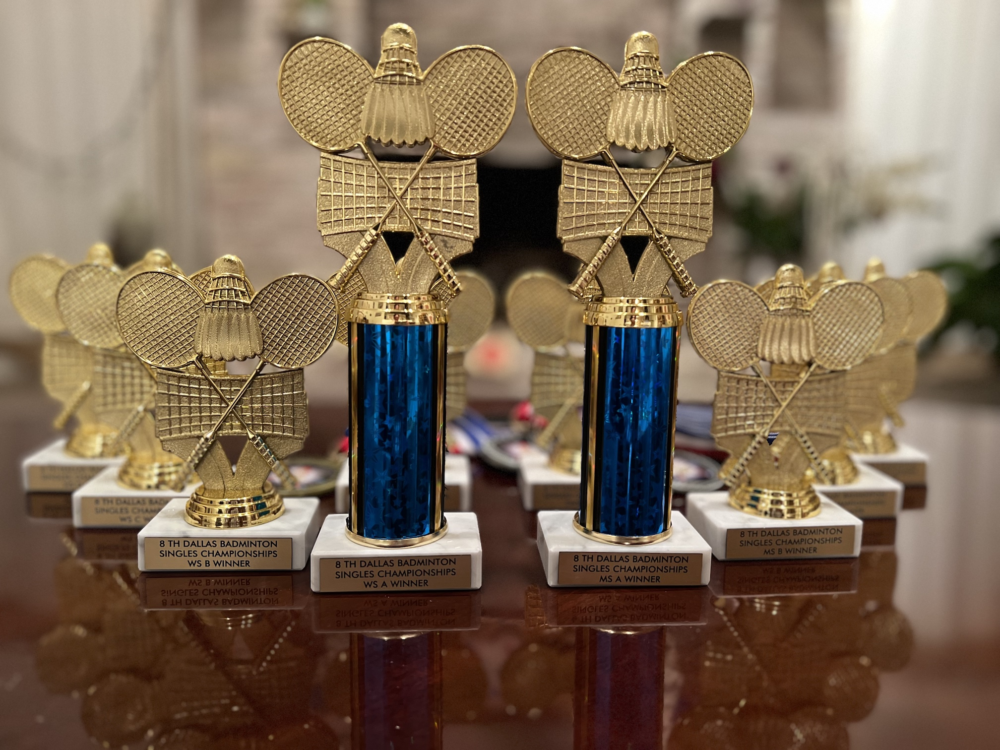

Welcome to the 8th Dallas Badminton Singles Championships!
We are pleased to invite you to participate to the eighth Dallas Badminton Singles Championships
at Frisco Badminton on Sunday April 30, 2023.
The Singles Championships is a club-independent effort to promote the practice of singles in the Dallas Fort Worth area.
We provide participants with excellent playing conditions, including a gym with high ceiling and mats, very good shuttles
(BWF approved Youhe), and matches played in best of three 21 point games.
All participants get a take-home souvenir.
We are very grateful to our host, Frisco Badminton, and to our sponsors,
Dallas Badminton Club,
C-Square,
Yonex, and
Skylar Sun Sports,
without whom we could not have created such event
at the affordable overall cost of $35 per participant.
Committee
Matthias Odisio, Rodney Wong, and Anshuman Kowtha
Contact
Matthias Odisio
Email modisio@gmail.com
Phone (217) 377-8201
Date and Schedule
Sunday April 30th 2023, 10:30am-6:30pm
Venue
Frisco Badminton
6226 All Stars Ave, Frisco, TX 75033
Directions
Events
Men's Singles, Senior Men's Singles, Women's Singles, and Senior Women's Singles
Events with less than 3 players will be cancelled.
Players may only participate in one event.
Number of matches and scoring
Each player is guaranteed 2 matches.
All matches are best of three games using the Badminton World Federation 21-point rally scoring system.
Draws
The committee will make (and adjust) the draws.
Players must be available in the gym 30 minutes prior to the scheduled time to ensure on-time start of matches,
and also to accommodate schedule adjustments.
Eligibility
Anyone is welcome to register. Please note that pretty much all participants will typically belong to the local "B" and "C" categories.
"A" players may not find suitable competition at the event.
To qualify for senior events, a player, male or female, must be at least 40 year old by Dec. 31st, 2023.
Rules
Badminton World Federation's laws of badminton.
5 minutes default rule will be strictly enforced; warm-up limited to 3 minutes.
Intervals: 11pt -> 1 minute, between games -> 2 minutes.
The draws for the tournament will be made by the Tournament Committee.
The Tournament Committee reserves the right to make the final decision on the draws.
The format of each event will depend on the number of registered entries.
Previous editions included ABCD drop flights, AB drop flight, full round-robin,
and group round-robin followed by play-offs.
Registration
Return your $35 registration fees and fill up the
online Google form
by April 16th, 2023.
You will receive a confirmation by email after registering.
A $5 discount is offered to participants who are less than 19 year old on Dec. 31st 2023,
or who are attending college and can show a valid and current college student ID card.
Prizes
Each participant gets a souvenir gift.
Winners and runner-ups get trophies or medals in all events.

For events with at least six (6) participants:
| Event | 1st | 2nd |
|---|
| MS A | $50 | $30 |
| WS A | $50 | $30 |
| SMS | $30 | $20 |
| SWS | $30 | $20 |
For events with less than six participants, winners are awarded $20.
Snacks and Refreshments
Bananas and refreshments will be provided for players and volunteers.
Registered players
Each player will be listed below as we receive their registration.
Each player will also receive a confirmation email.
MS Entries
Xin Jue Ng (Jay)
Yuan-Zheng Ng (Zen)
Justin Clark
Nathan Lee
Daniel Fu
Dileep Domakonda
Sriharsha Jonnadula
Rahul Rachamalla
Hubery Pai
Andrew Wang
Vijay Basava
Suman Komjeti
Raja
Varin Karri
Varish Karri
Vrishin Telikuntla
Venkat Nadella
Akshay Jalwadi
Yiyang Xu
Kiyansh Chaudhary
WS Entries
Vidushi Karn
Aashi Gupta
Nishita Balamurali
Shraddha Prakash
Kaavya Chaudhary
SMS Entries
Anshuman Kowtha
Raphi T
Vikas Dhir
Mithun Samani
Selva Nagamanickam
SWS Entries
Sandy Paka
Hall of Fame
2022 Results
Full results in PDF
Awards Photos
Congratulations to all winners!
MS A
Winner: Senthil Raja Krishnan
Runner up: Darren Teu
Semi-finalists: Tanmay Gupta, Shaunak Misra
WS
Winner: Hasini Gajjala
Runner up: Veda Mullangi
SMS
Winner: Mario Catalan
Runner up: Anshuman Kowtha
MS B
Winner: Abel Daniel Koshy
Runner-up: Akshay Jalwadi
MS C
Winner: Vijay Sunil Basava
Runner-up: Sriharsha Jonnaoula
MS D
Winner: Pranit Jaiswal
Runner-up: Vrishin Telikuntla
WS B
Winner: Diya Suresh
Runner-up: Sneha Krishna Chavan
WS C
Winner: Riya Suresh
SMS B
Winner: Kong Tham
Runner-up: Anandhakrishnan Damodaran
SMS C
Winner: Vikram Kotha
2019 Results
Full results in PDF
Awards Photos
Videos of matches
Congratulations to all winners!
MS A
Winner: Kent Vu
Runner up: Poojit Kumar Reddy
Semi-finalists: Senthil Raja Krishnan, Dylan Abidin
WS
Winner: Latika Sreenath
Runner up: Mae Angeli Saguil
SMS
Winner: Sanket Pringle
Runner up: Anil Reddy
SWS
Winner: Vagisha Sharma
Runner up: Qianling Hao
MS B
Winner: Vasanth Vaseegaran
Runner-up: Cong Liu
MS C
Winner: Anoop Reddy
Runner-up: Sanjay Mishra
2018 Results
Full results in PDF
Photos
Videos of the finals
Congratulations to all winners!
MS A
Winner: Ritvik Regulapati
Runner up: Kent Vu
Semi-finalists: Anoop Reddy, Sandy Popusi
WS
Winner: Anvi Bajpai
Runner up: Latika Sreenath
SMS
Winner: Sanjay Mishra
Runner up: Kong Meng Tham
MS B
Winner: Mario Catalan
Runner-up: Matthias Odisio
SMS Consolation
Winner: Bino Punnoose
Runner-up: Harish Reddy
MS C
Winner: Tarun Khurana
Runner-up: George Grozev
2017 Results
Full results in PDF
Photos
Videos of the finals
Congratulations to all winners!
MS A
Winner: Ritvik Regulapati
Runner up: Vamsi Mocherla
Semi-finalists: Anoop Reddy, Kent Vu
WS
Winner: Harika Regulapati
Runner up: Priyanka Mishra
SMS
Winner: Sanjay Mishra
Runner up: Kong Meng Tham
MS B
Winner: Phani Raghavarapu
Runner-up: Animesh Sharan
WS B
Winner: Reema Khan
Runner-up: Rebecca Jin
MS C
Winner: Ting Li
Runner-up: Anshuman Kowtha
WS C
Winner: Latika Sreenath
Runner-up: Kasturi Sunil Pawaskar
MS D
Winner: Akshay Vadnere
Runner-up: Tony Chen
WS D
Winner: Anjana Gopal
Runner-up: Ketki Chauhan
2016 Results
Full results in PDF
Pictures by volunteers
Video of MS A final thanks to Zheng Yu
Congratulations to all winners!
MS A
Winner: Kavin K. Kalaivadhanan
Runner up: Lokesh Valasa Reddy
Semi-finalists: Kong Tham, Oscar La
WS
Winner: Helena Li
Runner up: Hong Davis
Third place: Sarah Siemens
MS B
Winner: Animesh Sharan
Runner-up: Zheng Yu
MS C
Winner: Akshay Vadnere
Runner-up: Naren Ginagam
MS D
Winner: Matthias Odisio
Runner-up: Johns Oomen
2015 Results
Full results in PDF.
Pictures by Rodney Wong
Pictures of the Winners and Umpires
Congratulations to all winners!
MS A
Winner: Shuo Yuan
Runner up: Huy Xuan Trinh
Semi-finalists: Ryan Nibu, Danny Pham
WS
Winner: Elita Chandra
Runner up: Helena Li
Third place: Meena Nibu
SMS
Winner: Sameer Dabadghav
Runner up: Paul Nibu
Third place: Andre Chionh
MS B
Winner: Kong Tham
Runner up: Vamsi Krishna Mocherla
MS C
Winner: Anshuman Kowtha
Runner up: Matthias Odisio
2014 Results
Full results in HTML, in PDF.
Pictures by Rodney Wong